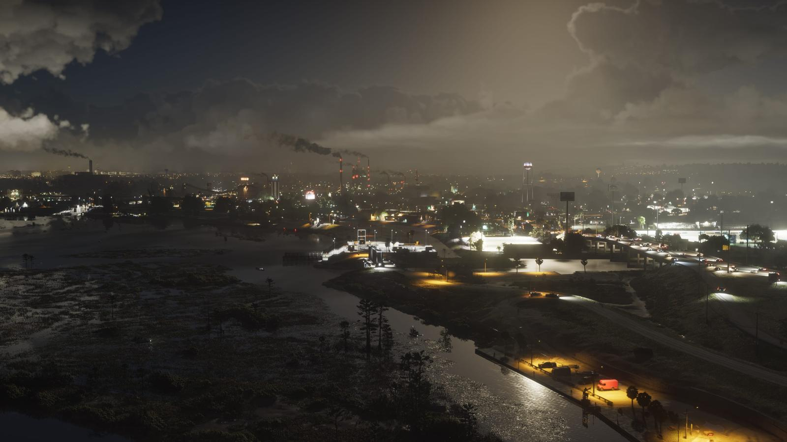
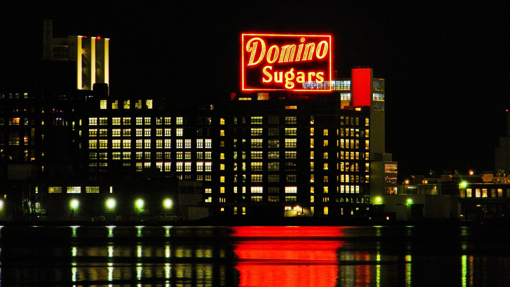
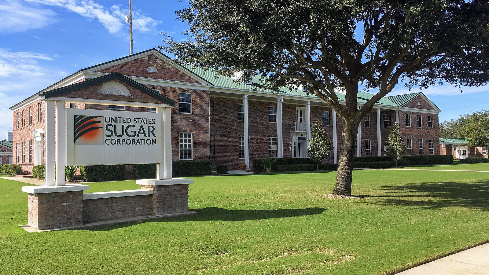

Allied Crystal и сахарные гиганты Флориды
Опубликовано:
Реальной компании Allied Crystal нет. Но главная идея — огромная сахарная корпорация, которая держит целый регион, — взята из жизни Флориды.


- Allied Crystal — вымышленная сахарная компания из Амброзии.
- Флорида — главный производитель тростникового сахара в США.
- Крупнейшие игроки — U.S. Sugar и Florida Crystals.
- Florida Crystals вместе с кооперативом флоридских фермеров владеет ASR Group, которой принадлежит бренд Domino.
Что в игре
По описанию Rockstar, сахарный завод Allied Crystal — сердце Амброзии. Логотипа крупным планом пока не показывали, так что о дизайне бренда судить рано.
Что в реальности
Сахар во Флориде — большой бизнес с политическим весом. Две главные компании — United States Sugar Corporation из Клюистона и Florida Crystals из Уэст-Палм-Бич. Вместе с Сахарным кооперативом фермеров Флориды Florida Crystals владеет ASR Group — крупнейшим в мире производителем рафинированного тростникового сахара. Ему принадлежит бренд Domino, неоновая вывеска которого десятилетиями светит над гаванью Балтимора.

Посмотрите на название: Allied Crystal. Слово Crystal есть сразу у двух реальных сахарных брендов США — Florida Crystals и American Crystal Sugar. Похоже, Rockstar собрала имя из узнаваемых кусков. Это наша трактовка, официально студия название не объясняла.
Совпадает и отличается
| Реальность | GTA 6 | |
|---|---|---|
| Сахарная корпорация держит регион | U.S. Sugar, Florida Crystals | 🟢 Allied Crystal |
| Название | Florida Crystals | 🟡 Allied Crystal |
| Логотип и упаковка | Реальные | Узнаем в игре |
Источники: Rockstar Games (описание Ambrosia); United States Sugar Corporation; Florida Crystals Corporation; ASR Group / Domino Sugar.
Реальные фото: Фото: David Robert Crews, CC BY-SA 2.0 · Wikimedia Commons; Фото: Yanjipy, CC BY-SA 4.0 · Wikimedia Commons. Кадры игры: Rockstar Games.
Каждый день — одно сравнение: кадр игры рядом с реальным фото. Подписывайтесь:
YouTubeInstagramTikTok
 vs
vs
 vs
vs
 vs
vs